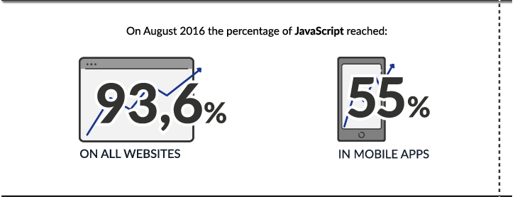

Javascript khắp mọi nơi
March 17, 2017

Với Javascript, ta có thể mần:
Web – Frontend
Nhắc đến web mà không nói đến Javascript cũng như nhắc đến Nhật Bổn mà không đề cập đến JAV.
Theo thống kê năm 2016, 93% web trên thế giới có dùng Javascript. Số web còn lại chắc web tĩnh.
source: https://blog.jscrambler.com/javascript-is-everywhere/
Danh sách framework hỗ trợ frontend của Javacript phải gọi là không đếm được:
- React
- Angular
- Vue
- Backbone
- Ember
Web Backend/Fullstack
Với sự phát triển của các framework NodeJS, chúng ta đã có thể mần backend với Javascript.
Danh sách những NodeJS frameworks:
- Express.js
- Hapi.js
- Meteor
- Mean.js
- Sails.js
Ứng dụng di động
Với tương lại sáng lạng của Progressive Web App. Mình sẽ nói về Progressive Web App là gì ở những bài viết sau. Nhưng đơn giản là bạn có thể viết ứng dụng một lần và chạy trên cả Android/IOS/Web. Không tin hử? Đây là danh sách những Progressive Web App: https://pwa.rocks/
Bạn hãy vào link trên bằng trình duyệt web máy tính/di động và trải nghiệm nhé. Hiện tại Safari vẫn chưa hỗ trợ Progressive Web App, nhưng Apple đã có kế hoạch cho việc này. Có thể nói Progressive Web App là tương lai của ứng dụng di động.
Đương nhiên bạn không thể viết Progressive Web App mà không dùng đến Javascript.
Ngoài ra còn có những lựa chọn viết ứng dụng di động hybrid cũng như native khá hot trong thời gian gần đây:
- React Native, được giới thiệu là 100% native. Đây là cái tên hot nhất trong mảng ứng dụng di động. Cùng thử mần ứng dụng Hello World với React Native xem thế lào nhé!
- Ionic.
Còn rất nhiều frameworks khác nhưng mình không đánh giá cao như:
- NativeScript
- Tabrisjs
- PhoneGap.
Ứng dụng desktop
Bạn không đọc nhầm đâu. Vâng, rất nhiều ứng dụng desktop nổi tiếng, bạn đang xài hằng ngày được viết bằng Javascript đấy. Ví dụ như:
- Atom
- Visual Studio Code
- Slack
Và đây là các frameworks hỗ trợ viết ứng dụng desktop với Javascrip:
- Electron from Github
- app.js
- nw.js
Atom được viết bằng JS
Game
Với Javascript bạn cũng có thể mần game được luôn. Tuy nhiên theo nhận xét của mình nếu bạn dùng Javascript để làm game thì khá là sida. Bởi phân khúc game engine hiện nay đã có các ông lớn như Unity, cocos2d, Unreal. Đây là list những frameworks hỗ trợ mần game với Javascript:
- http://craftyjs.com/
- http://www.babylonjs.com/
- https://playcanvas.com/
- https://whsjs.readme.io/docs
IoT
Ngạc nhiên chưa?
Như mình đã nói, JS khắp mọi nơi từ thành thị đến nông thôn từ web đến IoT. Bạn có thể viết app cho Arduino, Raspberry Pi và nhiều thiết bị điện tử khác hoàn toàn bằng JS
- https://cylonjs.com/#platforms
- http://iotjs.net/
- http://johnny-five.io/
Vậy Javascript không có điểm yếu ư?
Một số lĩnh vực như AI, data visualization, vv JS có thư viện hỗ trợ, tuy nhiên cũng khá sida so với hàng chính hãng.
Web viết bằng JS cũng có những lỗi hỏng bảo mật ( Xem thêm https://blog.jscrambler.com/javascript-is-everywhere/ )
Tuy nhiên với một ngôn ngữ có khá nhiều đất dụng võ như vậy thì thiết nghĩ mọi người cũng nên học qua nó một lần. Give it a try!
Most viewed